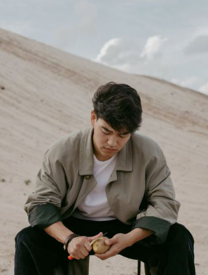
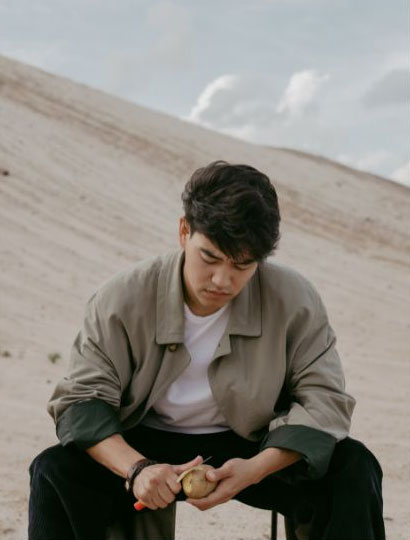

Who I am

I love editorial shoots because it brings you out of the concept of normalcy despite being surrounded
by extremely mundane things.
Delora Butler
portfolio

Modeling Portfolio
Daniel Gallego
I wanted my first project as a model to be with someone I trusted, so I contacted Delora for a portfolio-building shoot. She guided me through everything while respecting my own preferences. I would not trade that experience for anything."

Commercial Shoot
Fleure Beauty
We love working with Delora because she captures the brand so well. She shows the voice we want to project through her photos. She's a joy to work with, especially on set."

Collection Campaign
Dualitee Apparel
"Delora helps us bring out the human element in our clothes. She shows our customers the fluidity that can't be seen off the racks. We always contact her whenever we need a photographer."